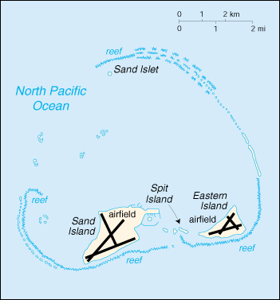

![[Country Flag of Midway Islands]](../flags/mq-lgflag.jpg)
| Midway Islands |
|
       |  | |
| Geography |
Location: Oceania, atoll in the North Pacific Ocean, about one-third of the way from Honolulu to Tokyo
Geographic coordinates: 28 13 N, 177 22 W
Map references: Oceania
Area:
total:
6.2 sq km
land:
6.2 sq km
water:
0 sq km
note:
includes Eastern Island, Sand Island, and Spit Island
Area - comparative: about nine times the size of The Mall in Washington, DC
Land boundaries: 0 km
Coastline: 15 km
Maritime claims:
exclusive economic zone:
200 nm
territorial sea:
12 nm
Climate: subtropical, but moderated by prevailing easterly winds
Terrain: low, nearly level
Elevation extremes:
lowest point:
Pacific Ocean 0 m
highest point:
unnamed location 13 m
Natural resources: wildlife, terrestrial and aquatic
Land use:
arable land:
0%
permanent crops:
0%
permanent pastures:
0%
forests and woodland:
0%
other:
100%
Irrigated land: 0 sq km (1998)
Natural hazards: NA
Environment - current issues: NA
Geography - note: a coral atoll managed as a national wildlife refuge and open to the public for wildlife-related recreation in the form of wildlife observation and photography, sport fishing, snorkeling, and scuba diving
| People |
Population: no indigenous inhabitants (July 2000 est.)
| Government |
Country name:
conventional long form:
none
conventional short form:
Midway Islands
Data code: MQ
Dependency status: unincorporated territory of the US; formerly administered from Washington, DC, by the US Navy, under Naval Facilities Engineering Command, Pacific Division; this facility has been operationally closed since 10 September 1993; on 31 October 1996, through a presidential executive order, the jurisdiction and control of the atoll was transferred to the Fish and Wildlife Service of the US Department of the Interior as part of the National Wildlife Refuge system
Capital: none; administered from Washington, DC
Flag description: the flag of the US is used
| Economy |
Economy - overview: The economy is based on providing support services for the national wildlife refuge activities located on the islands. All food and manufactured goods must be imported.
| Transportation |
Highways:
total:
32 km
paved:
NA km
unpaved:
NA km
Pipelines: 7.8 km
Ports and harbors: Sand Island
Airports: 3 (1999 est.)
Airports - with paved runways:
total:
2
1,524 to 2,437 m:
2 (1999 est.)
Airports - with unpaved runways:
total:
1
914 to 1,523 m:
1 (1999 est.)
| Military |
Military - note: defense is the responsibility of the US
| Transnational Issues |
Disputes - international: none